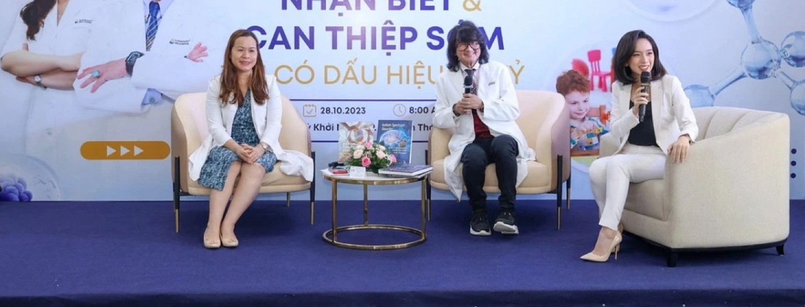

families reached nationwide
Case study
A private international clinic entered a sensitive area of care in Vietnam, where the proposition was still unfamiliar.

The same four steps we apply to your clinic
Provider Value
A clinic with international expertise and an approach new to Vietnam.
Brand Signal
An education-first platform, “Vì Sức Khoẻ Tinh Thần Trẻ Em Việt Nam”, not a treatment pitch.
Care Proof
Expert voices, a leading children’s hospital and a team trained to deliver one seamless experience.
Patient Choice
Families understood first, then chose.
What we designed
Seminars and educational articles came first, before any assessment activity. Clear, well-designed information and strategically developed medical content.
Content shaped around the questions families actually ask, in plain language, so they felt informed rather than overwhelmed.
A personalised approach to each family, managed efficiently with technology.
Ongoing care and follow-up with each family.
Behind every step, the team was trained to keep the experience seamless, so patients and relatives were fully guided and stayed at ease through the whole journey.
Outcome
families reached nationwide
programme of its kind from a private international clinic in this field
rollout, in partnership with a leading children’s hospital